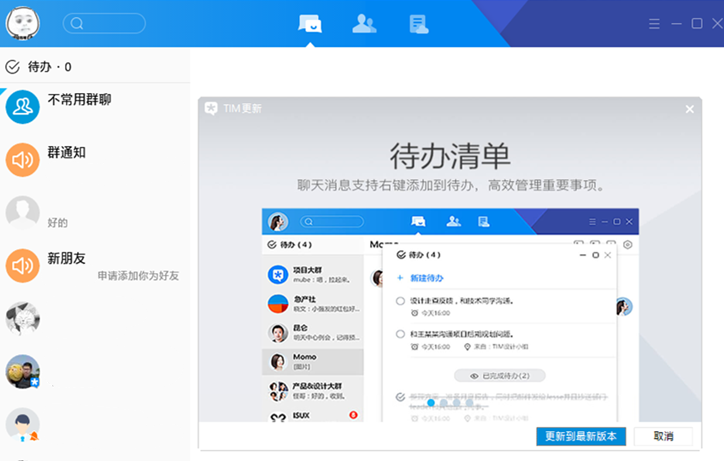

chrome_reader_mode
小 X 博客
folder
专辑 - 安装，激活，部署 微软产品
本专辑专门介绍如何 安装，激活，部署 微软 Windows 10 8.1 7 XP Office 365 2019 2016 2013 2010 2007 2003 产品
天目大峡谷
无图
[教程]将 Microsoft Edge 与 IE 模式配合使用

腾讯TIM已经发布安全更新解决火绒发现的TX升级程序被劫持问题
上周日火绒安全团队发现有攻击者借助路由器劫持腾讯QQ/TIM系列软件的升级程序并利用漏洞向用户投放病毒。实际上腾讯的升级程序存在校验问题因此无法检测到被篡改的升级包，也正是如此攻击者才想到通过路由来劫持。
无图
我的第一篇博客
这是我的第一个博客。这是我的第一个博客。这是我的第一个博客。这是我的第一个博客。这是我的第一个博客。这是我的第一个博客。
 天目大峡谷
天目大峡谷